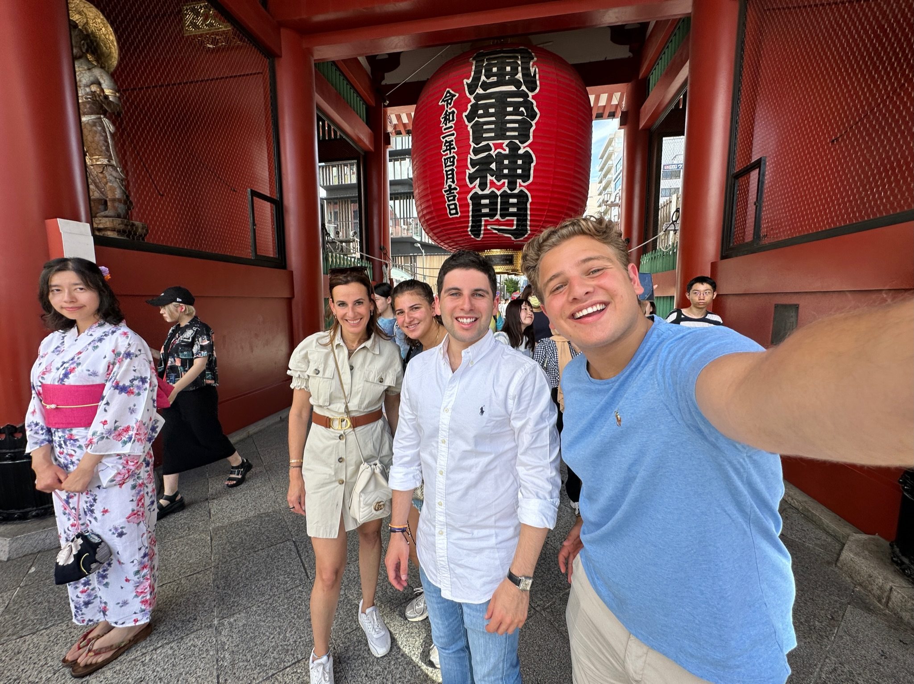
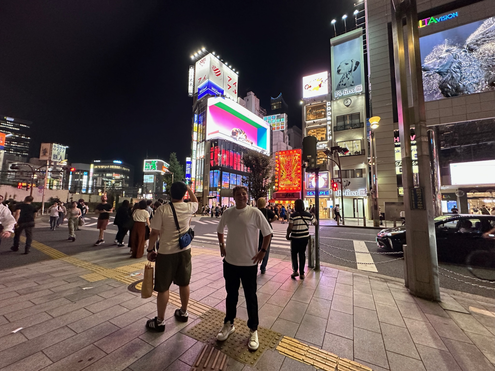
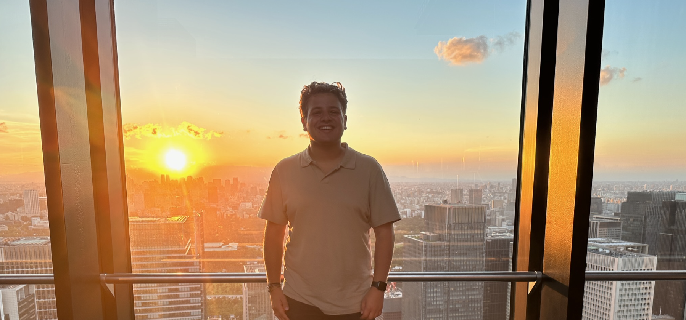
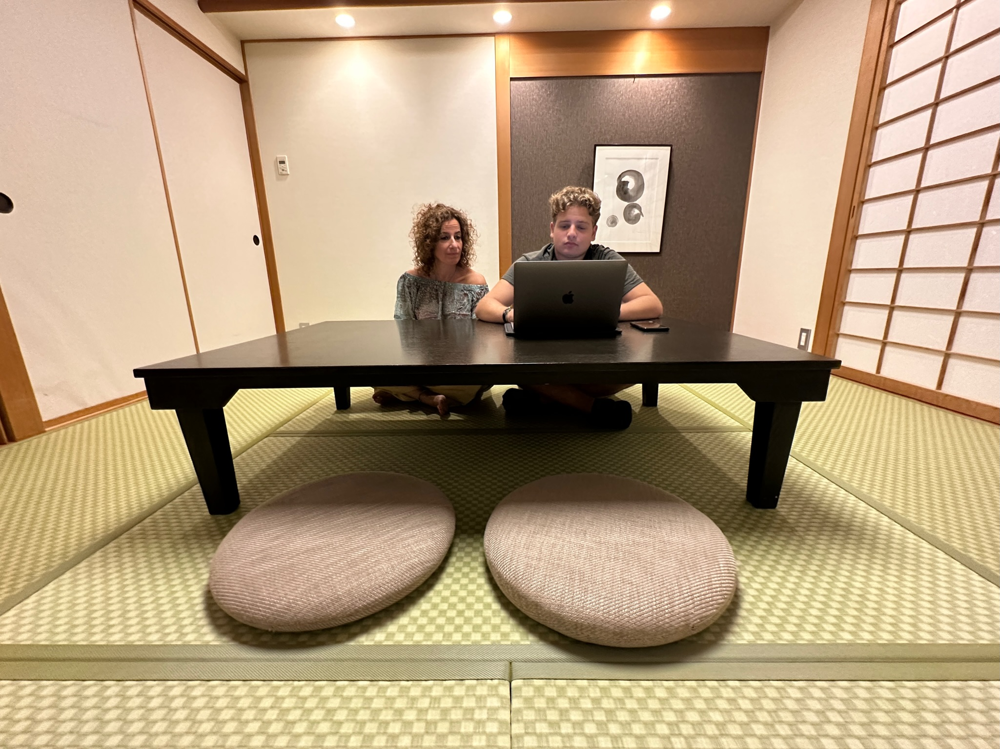
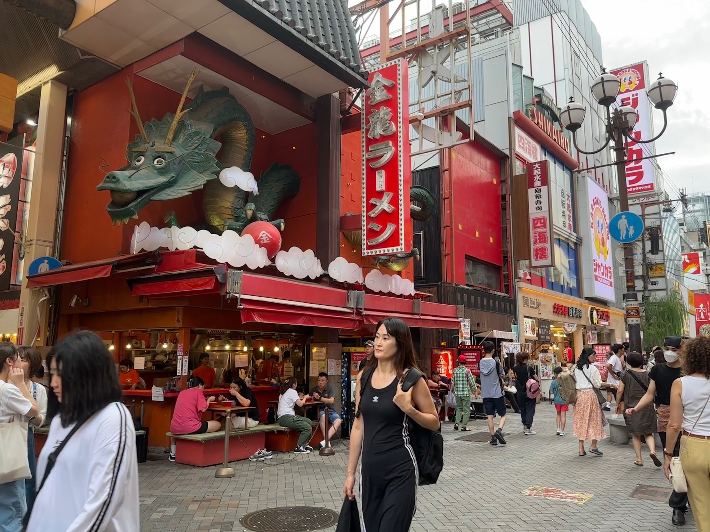
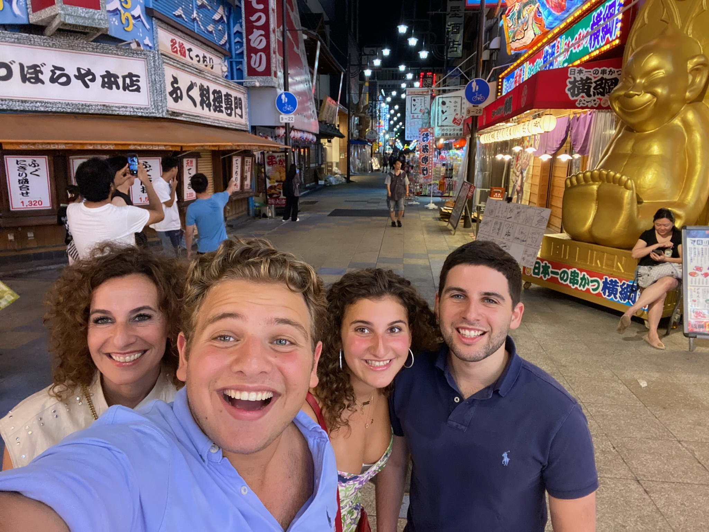
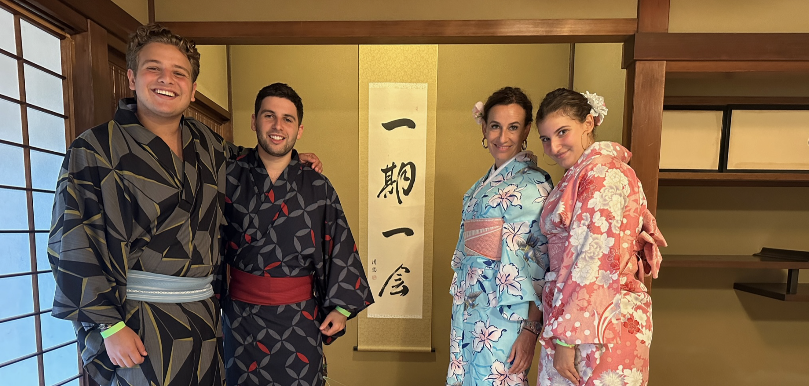
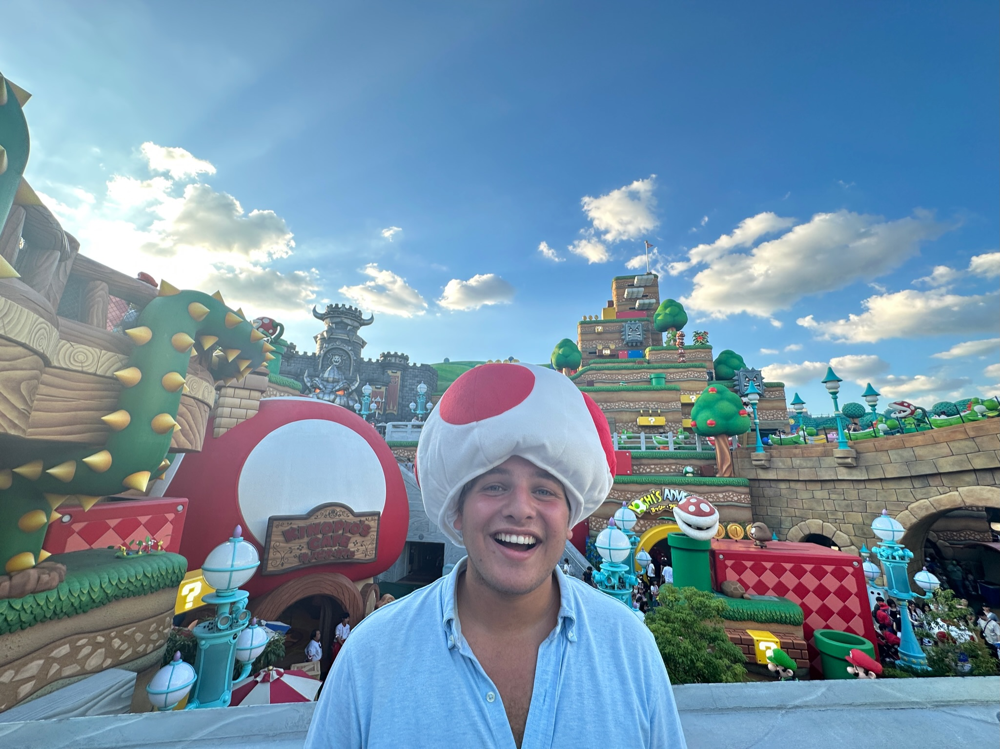

Konichiwa iedereen!!!
We zijn aangekomen in het land van grijpmachines op straat, sushi, pagodes en tempels, treinen op magneet en saké. Hoe de vlucht verliep lees je in m’n verslaggie over gisteren :))
kwamen aan op het vliegveld in Narita. Narita is een stad die niet al te ver ligt van Tokio (en dezelfde naam heeft als de straat waar het CBR zich bevind….. ik weet niet zo goed wat ik daar van moet vinden). In Narita hebben we alles geregeld voor het openbaar vervoer. Althans, ik niet. En Sophie ook niet. Mama en Alex hebben dat lekker lopen regelen (en je hoort mij er niet over klagen hihi).
Toen alles was geregeld voor het openbaar vervoer gingen we met de trein en metro naar Tokio. Eerst nog even een lekker bakje sushi gehaald voor in de trein en daarna lekker reizen naar ons hotel. De trein- en metroreis liep spoedig en we waren al heel snel in ons hotel. Daar konden we even lekker douchen, bijkomen, aankleden, de Japanse wc uittesten met billenverwarming en enge spuitjes, en daarna lekker door om de stad te verkennen. We zijn eerst naar de tempel geweest waar Kim Kardashian gisteren ook is geweest en daarna zijn we wat gaan lunchen bij een traditioneel restaurantje. We moesten onze schoenen uit en gingen aan zo’n coole lage tafel zitten (zo’n tafel die ze bij tanuki ook proberen te nabootsen). In dit restaurant waren ze gespecialiseerd in 1 vis, namelijk…… de kogelvis. Ja niemand van ons had dat ooit gegeten, dus dat was best spannend. En Alex maakte het er ook niet beter van want hij noemde de kogelvis steeds een blobvis. En voor de mensen die niet weten wat een blobvis is. Zoek maar op, je wordt er misselijk van. Naja het was dus spannend, maar we gingen met deze kogelvis lekker shabu shabu’en. Het was een ervaring en een erg gezellige lunch!
Na de lunch gingen we door naar nog wat tempels en een pagode. Nadat we daar genoeg cultuur hadden gesnoven gingen we met de metro door naar een andere buurt. Ik heb geen idee wat alle namen van alle buurten zijn, maar ik denk jullie ook niet, dus ik ga ook niet de moeite doen om alles juist en goed op te zoeken voor dit verslag hihi. Maar goed, we gingen naar de buurt die bekend staat om alle Anime, arcades, vending machines op straat en alle andere futuristische gekkigheid. Toen we aankwamen moesten we eerst even een koffietje halen, want ja we hebben allemaal niet tot bijna niet geslapen de afgelopen 30 uur (behalve mama, die heeft heerlijk geslapen. Ze beweert alleen van niet. Daar geloven we natuurlijk helemaal niks van). Dus een koffietje moest wel in m’n mik. Na ons koffietje gingen we naar een Arcade. Hier heb ik iedereen even laten zien wie hier de baas is in de trant van dansen en sjansen (en zweten).
We hebben nog een beetje lopen wandelen na de Arcade en zijn daarna doorgegaan naar een restaurant wat mama had gereserveerd. Hier hadden we een omakase. Dat is voor de mensen die het niet weten. Een restaurant waar de chef een menu maakt met iets van 20 stukjes/gerechtjes. Het was echt super lekker, maar er zaten ook wel wat spannende dingen tussen zoals; uni (als je dit niet goed bereid kan je dood gaan), slakken, schelpen en andere exotische, Japanse coole dingen en dieren.
Na het heerlijke eten en de super gezellige avond was het wel weer tijd om terug te gaan naar ons hotel. Dat hebben we lekker te voet gedaan. Morgen hebben we weer een leuke en volle dag voor de boeg dus vroeg slapen. Zeker omdat we al zo weinig slaap te pakken hadden oeps… en ik ben echt super benieuwd wat ze bij het ontbijt hebben hahaha. Naja dat en meer lees je morgen allemaal (denk ik).
Ohja! Voor ik het vergeet… Ik had dit verslag al helemaal geschreven en toen had hij zichzelf verwijderd, potverdikkeme. Dus dit is de tweede keer dat ik m schrijf. Nu ben ik uitgeschreven voor de rest van de reis. De rest van de verslagen wordt lekker ChatGPT.
Sajonara chaveriem!!
Konichiwa iedereen! En welkom bij dag 2 van onze reis!
Zoals jullie je misschien nog kunnen herinneren van mn reisverslag van gisteren had ik heel veel zin in het ontbijt. Ik was echt onwijs benieuwd naar alle lekkernijen die ze mogelijk zouden hebben. En ik kan jullie zeggen…. het stelde NIET teleur. Ze hadden meerdere soep barren waar je je eigen soba, ramen, miso en andere gekke soepen kon samenstellen. Ook hadden ze dim Sum, een bagel station en allemaal andere lekkernijen. Naja genoeg over het ontbijt want gek genoeg was dat het minste wat we hadden gegeten.
We waren al vroeg bij het ontbijt want we hadden de welbekende fietstour! Hier hebben we (bijna) alles van Tokyo gezien en gehoord (ja echt alles. Zelfs over de WC’s op straat). Tokio is best wel geheuveld dus het was wel zwaar fietsen. Zeker na 3 jaar elektrisch fietsen. Maar hey, het is gelukt en het was super. We hebben de Tokio tower mogen aanschouwen, tempels gezien, Tokio bay, een 3D billbord van een kat, shibuya crossing, en nog veel meer….
Na de fietstour gingen we even douchen (want ja we hebben gezweet) en daarna door naar Ginza. Hier hebben we heerlijk geluncht bij een sushi bar. En ja je gelooft het niet, maar het okura in Nederland is hier niks bij. Nadat we de fatty tuna hier hebben opgeslokt (letterlijk, want hij was op een gegeven moment uitverkocht door ons hihi) zijn we doorgegaan om rond te lopen in Ginza. Hier hebben we de rest van de middag rondgelopen en winkeltjes bekeken want wowie wat een bizarre wijk is dat. Het is een soort PC hoofdstraat in het kwadraat, wat toen nog een keer in het kwadraat is gedaan en daarna nog vermenigvuldigd is bij 7. Ohja voor ik het vergeet, we zijn ook in de grootste Uniqlo ter wereld geweest. Met maarliefst 12 verdiepingen. Dus even lekker shoppen en daarna terug naar het hotel om ons om te kleden voor het avondeten.
In het hotel heb ik m’n nieuwe outfit aangedaan en zijn we gaan lopen naar het restaurant. Langs de billborden en felle lichten naar een heerlijk tepanyaki restaurant. Hier hebben we heerlijk gegeten en de grootste lol gehad met de chef. Want ja hij dacht dat Nederlands hetzelfde als indonesisch was (best apart maar enigszins begrijpelijk) en daardoor heb ik ook geleerd dat ransel rugzak is en ontembaar hetzelfde in het Japans is als in het Nederlands. Anyway, het eten was goddelijk en gezellig. De 2 G’s dus.
Na het eten gingen we door naar shibuya. Hier gingen we nog een keer de shibuya crossing bekijken en zelf lopen whoopwhoop. Nog wat winkeltjes ingegaan en daarna lekker naar het hotel gegaan. Want ja het was inmiddels al 23.00u en ook wel tijd om te slapen. Morgen niet super veel gepland, maar het belooft een geweldige dag te worden. Dus jullie zien m’n reisverslaggie morgen wel weer verschijnen!!
(PS toch geen chatGPT geworden hihi)
Sajonara chaveriem!
Konichiwa ieeedereeen!
Het is inmiddels dag 4 van onze reis. Poeh wat gaat dat snel. Het was vandaag onze laatste dag in Tokio… Aaawhhhhhh. We zijn echt van deze stad gaan houden en zouden heel graag weer terugkomen. Maar dat kan helaas niet. Naja helaas? Ook niet zo erg want we hebben nog hele leuke andere dagen gepland!!
Onze dag begon zoals normaal bij het ontbijt. We moeten onszelf natuurlijk wel vullen als we zoveel gaan wandelen (We hebben namelijk 24000 stappen gezet. Erg gaaf ookal zeg ik het zelf). Nadat we hadden geluncht gingen we naar Ginza. Daar waren we gisteren ook, maar dat was zo’n succes dat we weer terug moesten. In Ginza was er een bizarre hello kitty walhalla. Dus Sophie was ook weer even zoet.
Na Ginza gingen we door naar de oude vismarkt. Er vindt daar een soort verse vissen cyclus plaats die we dus even moesten bestuderen. De vis werd gister gevangen, vandaag ontvangen, bereid en verkocht/opgegeten. Na het aandachtig bestuderen van de vis (bestuderen is trouwens bekijken, ruiken, watertanden, bestellen en eten) gingen we weer door naar Ginza om een beetje te shoppen.
Op een gegeven moment was ik wel uitgeshopt, dus gingen we een lekker rooftop barretje doen. Ohja en nog even iets leuks tussendoor: de wc’s hier hebben dus een knopje waardoor er een soort realistisch rioleringsgeluid aangaat. Hierdoor hoor je dus niemand poepen. Oké dat was het feitje, terug naar de rooftopbar.
De rooftopbar was precies wat je verwacht van een rooftopbar; een bar op een roof. Hij was wel heel mooi en we hadden een lekker drankje en wat snackies. Op een gegeven moment konden we zelfs de Mount Fuji zien vanaf het terras. Dat was echt bizar. Een leuk voorproefje voor morgen…. Maar daarover zo meer hehehhe :)
Lekker gedronken en gegeten, en daarna weer door terug naar ons hotel. Met een poging om naar ons hotel te lopen via Hiltopia (er is een soort ondergrondse hilton wereld die hiltopia heet onder ons hotel), ja een poging want de weg hadden we uiteindelijk niet gevonden. We kwamen uiteindelijk uit in een heel ander deel van sjinjuku, de buurt van ons hotel, maar geen probleem want we hebben iets langer dan normaal moeten lopen en opzich ook wel lekker om te wandelen :))))) (daar was de rest het niet mee eens en die was nogal geïrriteerd op mij, want het was misschien een beetje mijn fout, maar ook vooral Alex z’n fout, maar hij geeft het niet toe). Anyways, toen we in ons hotel waren, namen we een lekker drankje en wat snacks. En Sophie heeft iets WALGELIJKS gedaan. Ze heeft…. Sorry ik durf het bijna niet te zeggen… ze.. ze heeft….. PIZZA GEGETEN!!! dum dum duuuuuuuuummmm!!!
Sophie; ik hoop dat ie heeft gesmaakt want schaam je diep!
In ieder geval, na de lekkere drankjes, snacks (en pizza 🤢) gingen we door naar een restaurant. Een nieuwe omakase die een beetje leek op de vorige omakase. Ohja en Jack Dahan was er ook bij want die is ook in Japan. Tijdens het eten alvast onze stembanden opgewarmd voor de karaoke die we na het eten gingen doen. Lekker gezongen en gekloot met het karaoke apparaat, want newsflash we kunnen geen Japans en dat hele apparaat was in het japans, maar hey het was gelukt en hebben lekker gezongen en gesambabalt hahaha.
Daarna was het wel weer tijd om terug naar ons hotel te gaan, want het was inmiddels 00.30u en morgen hebben we een gave reisdag voor de boeg. We gaan met de bullettrain naar Odawara (of Hakone of iets anders, ik weet het ook allemaal even niet meer) waar we de Mt. Fuji kunnen zien yeahhhh. Maar daarover lezen jullie morgen meer.
Sajonara chaveriem!!!
Konichiwa iedereen!
Het is dag 5 en vandaag gaan we het even helemaal anders doen dan normaal… we gaan de stad uit whaaaaaa. We gaan de stad uit om de bergen in te gaan naar Odawara. Daar was het namelijk het plan om de Mt. Fuji beter te kunnen bekijken (ja dat was het plan maar daarover zo meer). We namen de metro naar Tokyo station want daar ging de welbekende… bullet train wooaaahhhww. Voor mij was het gewoon een super speedy trein met een lange neus (zoals mama en Sophie), maar Alex vond het het einde van de wereld. Dus het zal wel cool zijn.
We waren wel echt snel met de trein, want binnen 20 minuutjes waren we al in Odawara. Best snel dus. In Odawara namen we een shuttle bus naar ons hotel door de bergen heen. Prachtig uitzicht!
In ons hotel gingen we weer even acclimatiseren en uitzoeken wat er allemaal te doen was. Er was dus een bowlingbaan, karaokezaal, Arcade, Spa, natural hot springs, golfbaan, tennisbaan, en noem maar op in ons hotel. Erg gaaf dus. We slapen hier overigens maar 1 nachtje, want morgen gaan we weer door naar Osaka.
De kamers zijn erg gaaf en traditioneel. Mama en sophie hebben een soort tempel in de kamer en Alex en ik slapen op een verhoogstukje van de grond. Even iets anders dus, maar wel cool.
Het plan was dus om de Mt. Fuji te zien, maar door het weer werd dat heel lastig. Dus hopelijk morgen in de trein en anders niet. We hebben m in ieder geval al vanuit het vliegtuig en vanuit Tokio mogen aanschouwen.
We gingen eerst even lunchen voordat we van alle coole activiteiten gebruik wilde maken. Na een heerlijk soepje en mama haar massage gingen we de natural hot springs in. En 1 ding is zeker, iedereen is daar van top tot teen tot elk gat van z’n lichaam gereinigd. Je moest namelijk naakt dat bad in… maar niks houdt ons tegen. Dus hoe Alex het zou zeggen, liep hij daar zwaffelend rond in de hot springs en lekker naar buiten. Ondanks alle gore Japanse naakte lijven die rond dobberden in het water, was het best wel relaxed.
Daarna nog even het zwembad, sauna, en meest belangrijk; de douche in geweest.
Na ons te hebben opgefrist gingen we nog even een drankje doen en daarna lekker eten. Mama had al een tijdje zin in sukiyaki en vandaag was toch echt de dag. Dus we hebben heerlijke sukiyaki gegeten! Was echt om van te smullen! (Alles hier is om van te smullen hoor). Daarna nog even de Arcade ingegaan, gechillebilt op de kamer en daarna zijn we gaan slapen, want we moeten morgen weer vroeg op om naar Osaka te gaan. Whoopwhoop! Ik kan niet wachten (en ook niet op het ontbijt, want ik ben weer benieuwd wat ze hier zullen hebben hihi). Oké nou dat was m weer voor vandaag!
Sajonara chaveriem!!!
Konichiwa iedereen!!!!!
Vandaag zijn we met ons goeie been uit bed gestapt, alhoewel… gestapt? Eerder gerold. Want zoals jullie misschien nog van gisteren kunnen herrineren; we sliepen op de grond. Prima nachtje achter de rug en vandaag gaan we door naar de volgende grote stad. We gaan namelijk naar…… ooooossaaaaakaaaa. Woohoo. Ziiin iiiiiiinnnnn! We stonden op en gingen naar het ontbijt waar ik oh zo een zin in had. Ze hadden vandaag toooonijn nom nom nom nom. Dus op een van de foto’s zie je m’n ontbijt. Heerlijk dus hehehe.
Na het ontbijt gingen we door naar de bullet train. Dat is namelijk de manier hoe we naar Osaka gaan. De treinreis was super. We konden namelijk de Mount Fuji echt heeel goed zien! (Ja jullie horen me best vaak over de Fuji maar volgensmij is dat nu wel voorbij. Vind het gewoon een gave berg hihi). Toen we aankwamen in Osaka gingen we inchecken en de buurt verkennen. Het leek bij binnenkomst een beetje op Tokio, maar toen we gingen verkennen bleek het echt compleet anders te zijn. Wel weer hoge en lichte billborden, maar toch echt compleet anders. Wel heel gaaf!
Na het verkennen hadden we een drankje gedaan en weer terug naar ons hotel. We moesten even snelle Jelle omkleden, want we zouden heerlijk eten bij een… surprise surprise: Sushi bar! Het was weer heeeeerlijk! Na het eten nog even alles eraf gewandeld, want we hebben echt heeeeerlijk veel gegeten hehehehe.
Er is verder niet heel veel spannends gebeurt. Beetje Osaka verkennen in de nacht want dat is gaaf. Morgen ochtend weer vroeg op want we gaan iets super leuks doen in de ochtend! En met vroeg bedoel ik ook echt vroeg!
Ohja en we hebben speciale Japanse KitKats geprobeerd! Tip: Matcha is een aanrader en aardbij is een afrader!!
Ik ben benieuwd naar het ontbijt van het hotel morgen, maar ben bang dat ik er niks van ga eten…. Maar daarover morgen meer! Nou dat was m dan weer voor vandaag!
Sajonara chaveriem!!!
Konichiwa iedereen!!!
Wat gaat de tijd toch snel. Het is inmiddels al dag… ik durf het bijna niet hardop te schrijven…. DAG 7 whaaaaaaa. De tijd vliegt niet normaal snel voorbij. We gaan dus nog wel echt even knallen, want de helft van de reis zit er inmiddels al op.
Anyways…. Zoals je misschien nog van gisteren kan herrineren had ik zin in het ontbijt, maar wist ik niet of ik nou echt veel of überhaupt ging ontbijten. Het werd uiteindelijk geen ontbijt, maaaaaar ik heb wel even mogen gluren. Het zag er heerlijk uit en ze hadden wel echt bizar veel weer. Van okonomiyaki (inktvisballetjes) naar meloenbroodjes tot een nieuwe soep station.
Ontbijt zag er dus goed uit! Maaaaar we gaan er niks van eten want we hebben eeeeeeen FOOOOD TOOOUHHRRR!!! Nou ik heb er helemaal zin in want ik hou van eten (voor als jullie nog nooit naar m’n buik hebben gekeken). De man van de foodtour was een erg schattig osakeesje (als je zo iemand noemt die uit Osaka komt) en hij zou ons de lekkerste en beste spots laten zien.
Het begon allemaal wat spannend bij een vismarkt. Het was 9.00u ‘s ochtends dus aan vis kon ik nog niet echt denken. We zagen de kogelvis van dag 1 rondzwemmen, palingen, zalm, tonijn, kabeljauw, zee egels en nog veeeeel meer. Maar dus 9.00u en vis gaan niet gepaard. Maar joh boeien, yolo! We deden t toch. Samen met heeeerlijke druiven hebben we met heerlijke shashimi ontbeten!
En oh de shashimi was niet het enige wat we hebben gegeten. We hebben belachelijk veel gegeten. En jullie kennen me, ik eet echt veel. Maar poeh ik zat zo vol. Voller dan een avondje Sumo :o
We hebben heel veel verschillende dingen gegeten en gedronken van shashimi, druiven, katsu, matcha thee, andere zoetigheden, vlees, soep, matcha ijs, en nog veel meer…. Je kan dus denk ik wel snappen dat ik echt ongelofelijk vol zat.
Na de foodtour gingen we nog even wat shoppen en naar de Pokemon winkel en even langs bij het Pokemon café. Want ondanks dat we belachelijk vol zaten, we moesten het op ze minst wel even hebben gezien. Hoort bij de Japan experience.
Na het shoppen even relaxen en bijkomen van het eten en daarna weer klaarmaken voor het volgende eten poehhhh…. We aten vanavond weer aan de plaat. Mij kan je ‘s nachts echt wakker maken voor goeie teppan en in Japan heb je dat alleen maar, dus dat komt goed uit!
Na weer heel veel te hebben gegeten (en stiekem even naar de uniqlo gerend voor een grotere broek, want deze is te klein voor m’n huidige maag. Das een grapje hoor. Ik pas m’n broek en ben ook niet naar de uniqlo gegaan) zijn we nog even gaan wandelen.
Toen we genoeg hadden gewandeld gingen we weer terug naar ons hotel om goed uit te rusten voor ons uitstapje van morgen. Maar daarover morgen meer yehahhh!!!
Sajonara chaveriem!!
Konichiwa iedereen en welkom weer bij m’n reisverslaggies! Ik hoop dat jullie er een beetje van genieten!
Vandaag was het tijd voor iets nieuws! We gingen vandaag namelijk weer even uit Osaka om Kyoto te bezoeken! Kyoto staat al heel lang op m’n lijstje om te bezoeken (vooral omdat toen ik ooit 14 was ik een buzzfeed quiz had gedaan met m’n favoriete vakantie bestemming aan de hand van m’n McDonalds bestelling) en vandaag was dus de dag dat ik eindelijk Kyoto bezoeken mag. Er was altijd 1 plaatje wat me is bijgebleven van Kyoto en dat was een straatje waar je dan uitkijkt op een pagode. Dit moet ik dus zien. Maar goed, eerst in Kyoto zien te komen.
We namen de bullet train en waren in 20 minuutjes in Kyoto!!! Das echt winnen dus. Eenmaal in Kyoto aangekomen gingen we naar een tempel met allemaal shrines. Dat was gaaf maar na 15 minuten te hebben gelopen onder die shrines, was het ook wel genoeg. Dus was het tijd voor iets anders. Namelijjjjjkkkk het welbekende plaatje wat ik al sinds m’n 14e in m’n hoofd heb whaaaa. Dus op naar daar!
Toen we aankwamen op de welbekende plek voelde ik het helemaal door m’n lijf! Nee grapje hoor. Het was gewoon mooi haha niet meer. Maar wel leuk dat ik het heb mogen zien :). Nog een beetje gewandeld daar en daarna moesten we door lunchen. We hadden weer een heerlijke sushibar gevonden en daar lekker zitten eten. Ik krijg nooit genoeg van fatty tuna. Met een beetje haast geluncht, want we moesten daarna door naar een traditionele theeceremonie. Met een beetje iets te veel gebruik van m’n lachspieren zaten we daar in de (ik noem het even) soortvan dojo (maar zo heet het niet echt) in onze kimono. Hilarische ervaring. We zijn overigens wel echt expert op het gebied van matcha. En voor als je dit leest en een matcha latte haalt bij de Starbucks; schaam je diep!
Na de theeceremonie gingen we nog even naar het bamboebos, want ben je wel echt in Kyoto geweest als je het bamboebos niet hebt gezien? Ja dat ben je, want meer dan een beetje bamboe bij elkaar was het niet. Wel even leuk en grappig om gezien te hebben.
Het was op een gegeven moment wel weer tijd om terug te gaan naar Osaka, want het was al best laat en we hebben nog wel een leuke avond gepland staan in Osaka. Best knap hoe we trouwens bijna alle Kyoto hotspots in 1 dag hebben kunnen proppen. Dus kudos naar ons!
In Osaka hadden we een nieuwe omakase gepland staan. Maar niet zomaar een omakase… een kip omakase. Het was wel een beetje spannend want zonder erbij na te denken houden Japanners best van medium rare kip. We kregen dan ook kip tataki…. Maar yolo hè. Als ik morgen salmonella heb, dan is dit het laatste reisverslag wat jullie van me lezen. Maar het zal wel goedkomen. Het eten was echt goddelijk (zelfs de rauwe kip) en de chef was top.
Na het eten lekker gaan slapen want morgen gaat een pittig nachtje worden…. Maar wat, waarom, hoe en hoezo? Lees je morgen! Tot dan :)
Sajonara chaveriem!!
Konichiwa iedereen!!! Vandaag is overigens de laatste Konichiwa…. Ik leg later wel uit waarom (ookal spreekt het opzich wel voor zich).
Vandaag gingen Soof, mama, Alex en ik opsplitsen…. Mama en Sophie gingen lekker shoppen (voor Alex en mij heheheh) en Alex en ik gingen plezier hebben in Universal Studio’s woohooo!!! Hier hebben ze namelijk Mario wereld whaaaa spannenenenenenddddd!!!
Je leest dus in het reisverslaggie van vandaag wat Alex en ik hebben gedaan. Om te weten wat Soof en mama hebben gedaan, moet je ze even appen. Ookal was het volgensmij gewoon shoppen en eten :)).
De wekker stond al vroeg om 7.30u want we gaan naar UUUUUNIVERSAAAALLLL whoopwhoop. Alex en ik hadden er helemaal zin in. Dus met de metro gingen we daar naartoe. Deze universal studio’s zit dus echt in de stad Osaka. Er reed ook gewoon een snelweg over het park hahah. Het park was niet gigantisch maar wel echt prachtig. Ik ga jullie niet teveel vertellen over alles want het was gewoon een pretpark met attracties wat heel cool gethematiseerd is. Je had attracties van Jurassic park, Jaws, Despicable Me, Mario, Harry Potter en meer. Ze hadden dan ook echt bij elke attractie een hele wereld bijgebouwd.
De Harry Potter en Mario wereld sprongen er wel uit hoor. Poehhh die zijn gaaf. In het park zijn we overigens veranderd in Minions en uiteindelijk in Toad. Dit klinkt best weird en misschien snappen jullie hier helemaal niks van, maar het is voor mij grappig om later terug te lezen hehehe.
Na de hele dag lang in het park te lopen dwalen was het tijd om terug te gaan. We moeten namelijk vroeg eten, want we hebben een vlucht die we moeten halen…. Jaaaa we gaan namelijk vandaag naar Singaaapooorrreeee!!! Whaaaatttttt!!?????!!!?!?!
Ik heb er helemaal zin in. Maar eerst heeeeerlijke sukiyaki gegeten en daarna doorgegaan met iets te veel haast naar het vliegveld. Eenmaal op het vliegveld aangekomen verliep alles lekker soepel, maar dat mocht ook wel met ons gehaast op alle metro en treinstations. We zijn denk ik de enige die ooit heeft lopen rennen op dat station. Maar hè boeie. Tenminste wel vandaag 4x m’n bewegingsdoel bereikt -> dat is 1500 Kcal :))
Eenmaal in het vliegtuig aangekomen hebben we meteen onze oogjes gesloten. En hier stopt het reisverslag van vandaag want het is als ik m’n oogjes open doe een nieuwe dag. Ja helaas best een abrupt einde van de dag, maar niet getreurd, want morgen gewoon een nieuw verslaggie met waar we gebleven waren :)
Oké nou dat was m dan in Japan…
Sajonara chaveriem!!
